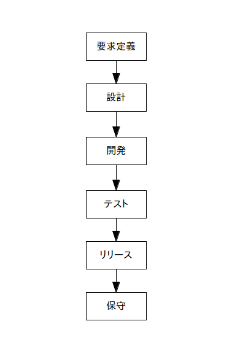

ウォーターフォール(waterfall)は「滝」という意味で、ウォーターフォール型のソフトウェア開発は各作業工程を滝の様に「要求定義」「設計」「開発」「テスト」「保守」などに分割し、トップダウン式に各工程を順次実行していくという開発手法です。
今となっては古典的な手法で問題も多いのですが、シンプルで分かりやすいのでいまだに広く使われています。
なお、原則として前の工程が終わるまでは次の工程に進むことは出来ません。
ウォーターフォールの特徴は以下の通りです。
このウォーターフォールによる開発プロセスを図にすると以下のようになります。

ちなみにウォーターフォール開発ではWBSを使ってスケジュール管理することが多いです。